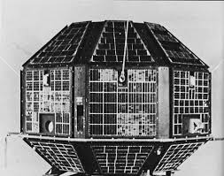
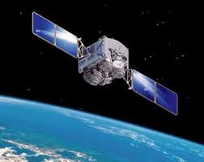

Total number of Satellites launched till date: 174
Success: 166
Failure: 8
Active Satellites: 42
Operational Satellites by Purpose
Communication: 15
Meteorological Observations: 4
Earth Observation: 14
Navigational/GPS: 7
Space Science: 2
List of Satellites
-
Active technological experience in building and operating a satellite system. This was India's first indigenously designed and built satellite.Launch Date: 19 April 1975
Operational Till: 11 February 1992
Purpose: Earth Science and Space Physics
Weight: 360 kg
Power: 46 W

-
India's first unmanned lunar probe. It carried 11 scientific instruments built and designed by India, USA, UK, Germany, Norway, Poland and Bulgaria. After a span of 9 months, the lunar craft faced debilitating failure, rendering most on-board systems inoperable. Additionally, faulty orientation of the SAR resulted in failed experiments, which eventually had to be abandoned.Launch Date: 22 October 2008
Operational Till: Still Operating
Purpose: Planetary Science
Weight: 1337.2 kg
Power: 840 W

-
India's first unmanned lunar probe. It carried 11 scientific instruments built and designed by India, USA, UK, Germany, Norway, Poland and Bulgaria. After a span of 9 months, the lunar craft faced debilitating failure, rendering most on-board systems inoperable. Additionally, faulty orientation of the SAR resulted in failed experiments, which eventually had to be abandoned.Launch Date: 5 November 2013
Operational Till: 28 August 2009
Purpose: Planetary Science
Weight: 1380 kg
Power: 750 W